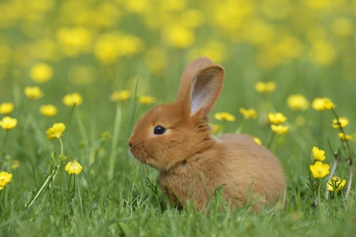

Use of a mark in Bootstrap
Use Ctrl + p to open the print dialog box.
The cat is similar in anatomy to the other felid species: it has a strong flexible body, quick reflexes, sharp teeth, and retractable claws adapted to killing small prey like mice and rats. Its night vision and sense of smell are well developed.

Dogs, like humans, are highly social animals and this similarity in their overall behavioural pattern accounts for their trainability, playfulnes and ability to fit into human households and social situations. This similarity has earned dogs a unique position in the realm of interspecies relationships.

Birds are vertebrate animals adapted for flight.Many can also run, jump, swim, and dive. Some, like penguins, have lost the ability to fly but retained their wings. Birds are found worldwide and in all habitats. The largest is the nine-foot-tall ostrich. The smallest is the two-inch-long bee hummingbird.

Rabbits are social creatures and are happiest in the company of their own species.Pet rabbits can live between eight to 12 years.Most rabbits can actually turn their ears 180 degrees
Column Right
Doctor

Physicians and surgeons diagnose and treat injuries or illnesses and address health maintenance. Physicians examine patients; take medical histories; prescribe medications; and order, perform, and interpret diagnostic tests. They often counsel patients on diet, hygiene, and preventive healthcare.
Nurse Assistance
Nursing assistants help patients with activities of daily living like eating and bathing. Nursing assistants, sometimes called nursing aides, provide basic care and help patients with activities of daily living. Orderlies transport patients and clean treatment areas.
About me My pets Client Feedbacks
NICU Nurse
NICU Nurse responsibilities include administering care to newborn infants residing in the NICU, running various medical tests and providing support to families as needed. Ultimately, you will work with newborn infants in critical care, along with supporting and providing information to parents and guardians.

Planets
While Earth is only the fifth largest planet in the solar system, it is the only world in our solar system with liquid water on the surface. Just slightly larger than nearby Venus, Earth is the biggest of the four planets closest to the Sun, all of which are made of rock and metal.
Planets
While Earth is only the fifth largest planet in the solar system, it is the only world in our solar system with liquid water on the surface. Just slightly larger than nearby Venus, Earth is the biggest of the four planets closest to the Sun, all of which are made of rock and metal.
Planets
While Earth is only the fifth largest planet in the solar system, it is the only world in our solar system with liquid water on the surface. Just slightly larger than nearby Venus, Earth is the biggest of the four planets closest to the Sun, all of which are made of rock and metal.
Planets
While Earth is only the fifth largest planet in the solar system, it is the only world in our solar system with liquid water on the surface. Just slightly larger than nearby Venus, Earth is the biggest of the four planets closest to the Sun, all of which are made of rock and metal.